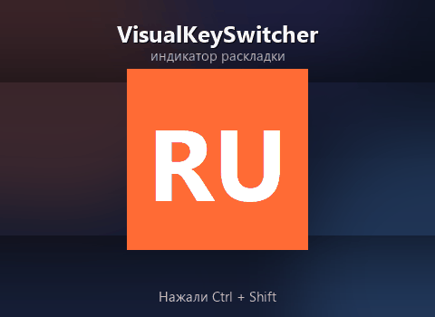
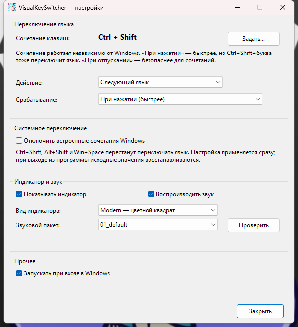

Индикатор раскладки,
который не врёт
Показывает и озвучивает смену языка. Свои горячие клавиши, мгновенный отклик и проверка фактического результата. Без интернета и телеметрии.

Что внутри
Маленькая утилита для трея, которая делает одну вещь хорошо.
Мгновенно
Индикатор и звук появляются сразу, без задержек и анимаций.
Свои сочетания
Любая комбинация, включая только модификаторы: Ctrl+Shift, Alt+Shift, Ctrl+Alt.
Честный результат
Если окно не приняло переключение, вы увидите фактический язык и красную рамку.
Звуки
Свой звук для каждого языка. Пакеты можно добавлять и менять.
Трей и автозапуск
Не мешает работе, запускается вместе с Windows.
Без интернета
Никакой телеметрии и сетевых запросов. Только локальные настройки и звуки.
Установка
Распаковал, запустил, работает. Установщик не нужен.
Скачайте архив из Releases.
Распакуйте папку целиком — рядом должны лежать exe и sound_pack.
Запустите exe. Иконка появится в трее; правый клик → «Настройки…».
